previous |
start
Chapter 27
JavaServer Pages and Servlets
Chapter Goals
- To implement dynamic web pages with JavaServer Faces (JSF) technology
- To learn the syntactical elements of JavaServer Faces
- To learn about navigation in JSF applications
- To build three-tier web applications
A Simple JSF Program
- JSF: Java Server Faces
- To develop a JSF application, you need a web server that is integrated with a JSF container
- A JSF page contains HTML and JSF tags
- The user interface of a JSF application is described by a set of JSF pages
A Simple JSF Program
A Simple JSF Program
- Previous structure has three parts:
- taglib directives required to locate two JSF libraries
- Tags from the core library have the prefix f: (such as f:view)
- Tags from the HTML library have the prefix h: (such as h:form)
- All JSF tags must be contained inside an f:view tag
- The h:form tag encloses all user interface elements
Executing the datetime Web Application
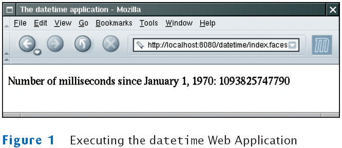
File datetime/index.jsp
The JSF Container Rewrites the Requested Page
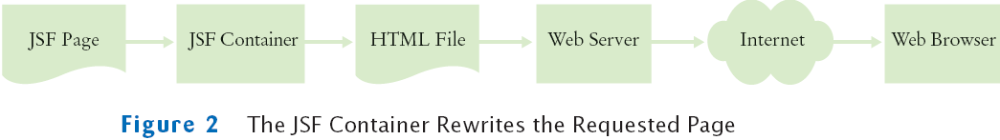
A Simple JSF Program
- Purpose of a JSF page is to generate an HTML page
- Basic process:
- HTML tags in the page are retained; they are the static part of the page
- JSF tags are translated into HTML; translation is dynamic, it depends on the state of Java objects
- The h: tags generate HTML
- The f: describe structural information that the h: tags use
- The taglib directives are stripped out
The HTML Code That Is Generated by a JSF Page
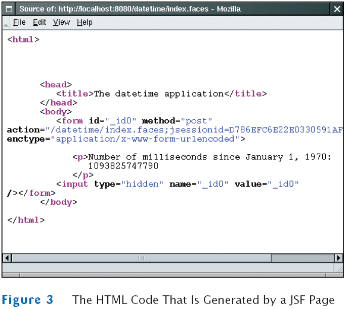
A Simple JSF Program
- The JSF container converts a JSF page to an HTML page, replacing JSF tags with text and HTML
- In the example, the h:outputText tag has the value binding #{dateTime.time}
- Value bindings link JSF pages with Java objects
- The Java objects are defined in a configuration file
- Named faces-config.xml
- Placed in the WEB-INF subdirectory of the web application's base directory
File datetime/WEB-INF/faces-config.xml
A Simple JSF Program
- This file defines an object dateTime with type java.util.Date
- A new object is constructed with each "request"
- Whenever a browser requests the page,
- A new Date object is constructed, and
- It is attached to the dateTime variable
- The Date constructor constructs an object with the current time
- #{dateTime.time} calls getTime of dateTime
- The h:outputText tag converts the result of that method call to text
Important Design Principle of the JSF Technology
- JSF enables the separation of presentation and business logic
- Presentation logic: the user interface of the web application
- Business logic: the part of the application that is independent of the visual presentation
- JSF pages define the presentation logic
- Java objects define the business logic
- The value bindings tie the two together
Steps for Deploying a JSF Application
- Make a subdirectory with the name of your web application in the webapps directory of your Tomcat installation
/usr/local/jakarta-tomcat/webapps/datetime
or
c:\Tomcat\webapps\datetime
- Place the index.jsp file into that directory
- Create a subdirectory WEB-INF in your application directory
/usr/local/jakarta-tomcat/webapps/datetime/WEB-INF
or
c:\Tomcat\webapps\datetime\WEB-INF
Steps for Deploying a JSF Application
- Place faces-config.xml into the WEB-INF subdirectory
- Place your Java classes (if any) inside WEB-INF/classes
- Place the file web.xml inside the WEB-INF subdirectory
- Start the web server
- Point your browser to http://localhost:8080/datetime/index.faces
The Directory Structure of the datetime Application
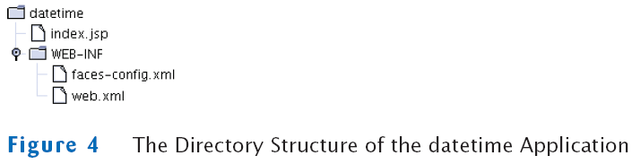
The Java Studio Creator Tool
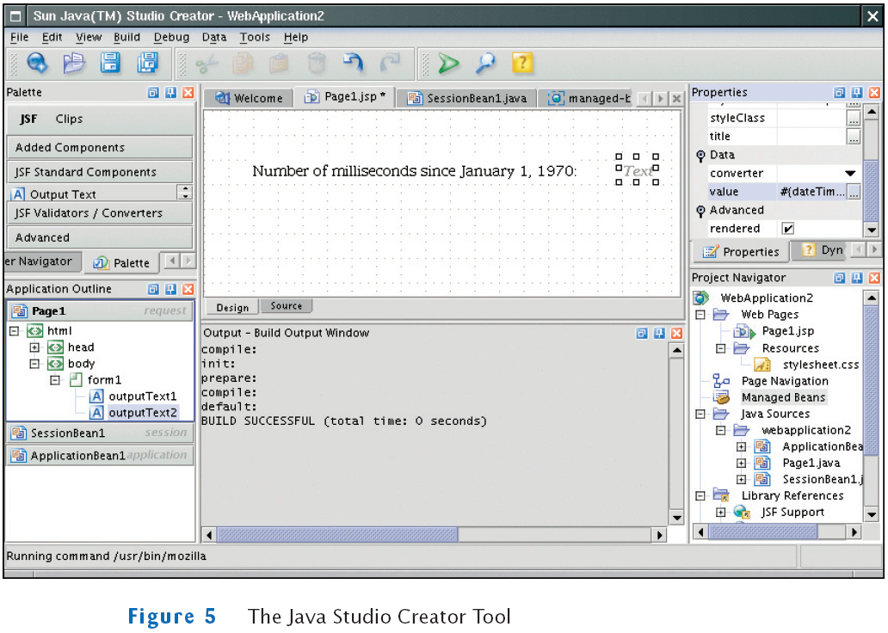
File datetime/WEB-INF/web.xml
Self Check
- What steps are required to add the image of a clock to the datetime application?
(The clock doesn't have to show the correct time.)
- Does a Swing program automatically separate presentation and business logic?
Answers
- Place an image file, say clock.gif, into the datetime directory, and add a tag
<img src="clock.gif"/> to the index.jsp file.
- No–it is possible (and sadly common) for programmers to place the business
logic into the frame and component classes of the user interface.
JavaBeans Components
- Software component:
- Encapsulates functionality
- Can be plugged into a software system without programming
- For example, the dateTime object
- Unlike some programming languages, Java does have explicit support for components
- In Java, use a programming convention to implement components
- A JavaBean is a Java class that follows this convention
- A JavaBean exposes properties–values of the component that can be accessed without programming
JavaBeans Components
- JavaBean requirements:
- Must have a public constructor with no parameters
- Must have methods for accessing the component properties that follow the get/set naming convention
JavaBeans Components
JavaBeans Components
- The name of a property starts with a lowercase letter
- The corresponding methods have an uppercase letter (isShopping)
- Exception: property names can be all capitals (e.g. ID or URL)
- Read-only property: has only a get method
- Write-only property: has only a set method
- A JavaBean can have additional methods, but they are not connected with properties
JavaBeans Components
JavaBeans Components
- This bean has two properties: creditCard and shopping
- Do not make any assumptions about the internal representation of properties
JavaBeans Components
JavaBeans Components
JavaBeans Components: An Example
- We want to display the current time, not the number of milliseconds since January 1, 1970
- Default time computation uses the time zone at the server location → not very useful
- We will prompt for the city in which the user is located,
and display the time in the user's time zone
JavaBeans Components: An Example
- Java library contains a TimeZone class
JavaBeans Components: An Example
JavaBeans Components: An Example
- Interaction with user:
- The user will simply enter the city name
- The time zone bean will replace the spaces in the name with underscores
- Then, check if that string appears at the end of one of the valid time zone IDs
The timezone Application
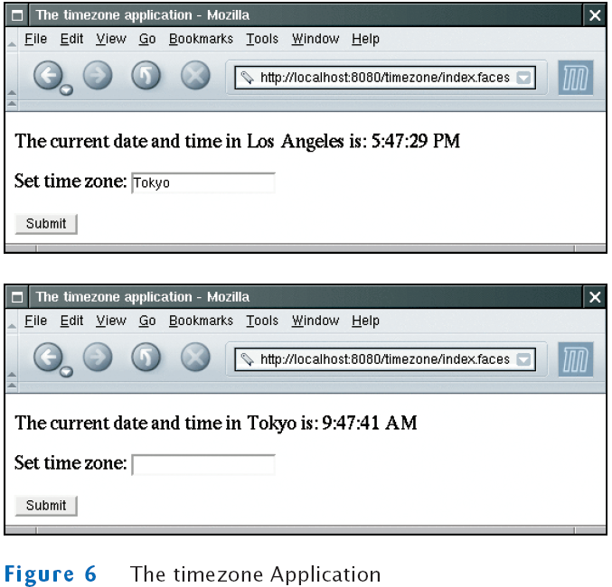
File timezone/WEB-INF/classes/bigjava/TimeZoneBean.java
File timezone/WEB-INF/faces-config.xml
File timezone/index.jsp
The Directory Structure of the timezone Application
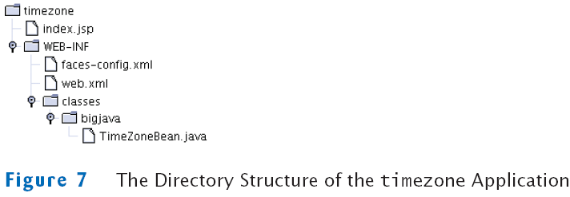
Self Check
- Is the Random class a Java bean?
- What work does the setCity method of the TimeZoneBean do besides setting the city instance field?
- When you start the timezone application for the first time, why does the input field contain the string "Los Angeles"?
Answers
- Technically, yes. It has a default constructor. However, it has no methods whose
name start with get or set, so it exposes no properties.
- It sets the zone instance field to match the time zone of the city.
- When the zone bean was constructed, its city property was set to "Los
Angeles". When the input field is rendered, its default value is the current value
of the city property.
Session State and Cookies
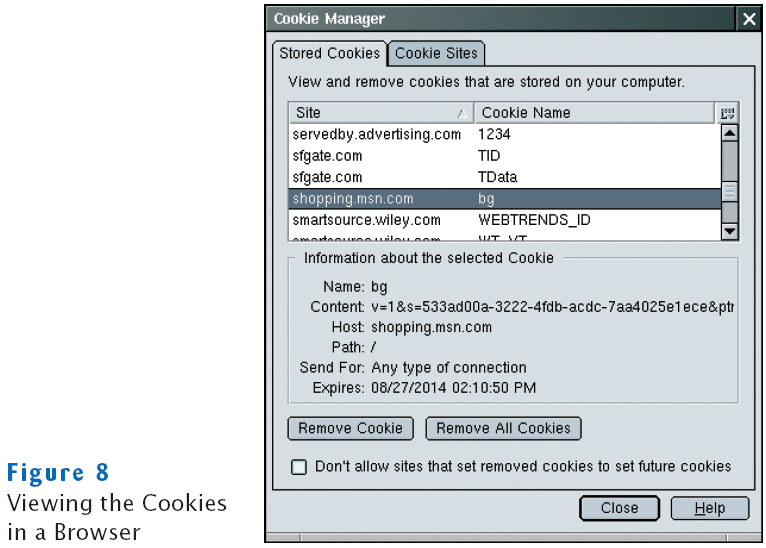
JSF Components
- Each component has a value attribute to connect the component value with a bean property
<h:inputSecret value="#{user.password}"/>
- h:inputTextArea has attributes to specify the rows and columns
<h:inputTextArea value="#{user.comment}" rows="10" cols="40"/>
- Radio button and checkbox groups allow you to specify horizontal or vertical layout:
<h:selectOneRadio value="#{burger.topping}" layout="lineDirection">
JSF Components: Button Groups and Menus
Example: Using a Map to Describe a List of Choices
- To create the list of choices:
public class CreditCardBean
{
. . .
public Map<String, Integer> getMonthChoices()
{
Map<String, Integer> choices = new LinkedHashMap<String, Integer>();
choices.put("January", 1);
choices.put("February", 2);
. . .
return choices;
}
}
- The type of the value property of the component must match the type of the map value
- For example, creditCard.expirationMonth must be an integer
- If multiple selections are allowed, the type of the value property must be a list or array of matching types
Common JSF Components
| Component | JSF Tag | Common Attributes | Example |
|---|
| Text Field | h:inputText | value | 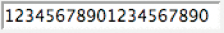 |
| Password Field | h:inputSecret | value | |
| Text Area | h:inputTextArea | value
rows
cols | 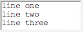 |
| Radio Button Group | h:selectOneRadio
h:selectManyRadio | value
layout | |
| Checkbox | h:selectOneCheckbox | value | |
| Checkbox Group | h:selectManyCheckbox | value
layout | |
| Menu | h:selectOneMenu
h:selectManyMenu | value | 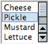 |
| Image | h:graphicImage | value | |
| Submit Button | h:commandButton | value
action | |
Self Check
- Which JSF components can be used to give a user a choice between "AM/PM"
and "military" time?
- How would you supply a set of choices for a credit card expiration year to a
h:selectOneMenu component?
Answers
- h:selectOneRadio, h:selectOneMenu, or h:selectOneCheckbox
- You would need a bean with a property such as the following:
public Map<String, Integer> getYearChoices()
{
Map<String, Integer> choices = new TreeMap<String, Integer>();
choices.put("2003", 2003);
choices.put("2004", 2004);
. . .
return choices;
}
Then supply a tag <f:selectItems value="#{creditCard.yearChoices}"/>.
Navigation Between Pages
- Consider an enhancement of our timezone program
- We start with a page that prompts the user to enter the name of a city
- When the user clicks "Submit" a new page appears
- Next page is either the page with the time display or an error page if no time zone is available
- The JSF container needs to determine which page to show next
Navigating Between Pages
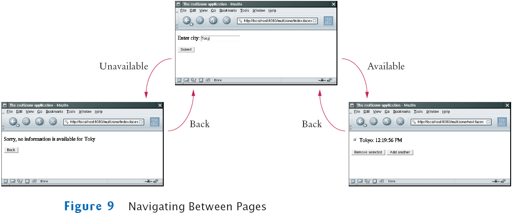
Navigation Between Pages
Navigation Between Pages
Navigation Between Pages
Self Check
- What tag would you need to add to error.jsp so that the user can click on a
button labeled "Help" and see help.jsp? What other changes do you need to
make to the web application?
- Which page would be displayed if the addCity method returned null?
Answers
- Add the tag <h:commandButton value="Help" action="help"/> to error.jsp, and
add a navigation rule to faces-config.xml:
<navigation-case>
<from-outcome>help</from-outcome>
<to-view-id>/help.jsp</to-view-id>
</navigation-case>
- The current page would be redisplayed.
A Three-Tier Application
- A three-tier application has separate tiers for presentation, business logic, and data storage
- The presentation tier: the web browser
- The "business logic" tier: the JSF container, the JSF pages, and the JavaBeans
- The storage tier: the database
Three-Tier Architecture
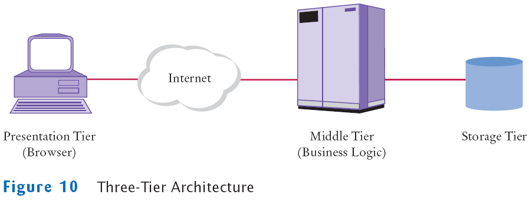
Two-Tier Client-Server Architecture
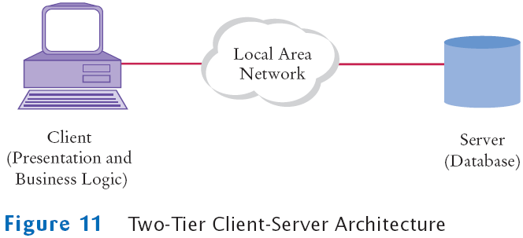
A Three-Tier Application
- If business logic changes
- In a two-tier application, new client program must be distributed over all desktops
- In a three-tier application, server code is updated, while presentation tier remains unchanged
A Three-Tier Application
File multizone/misc/CityZone.sql
The CityZone Table
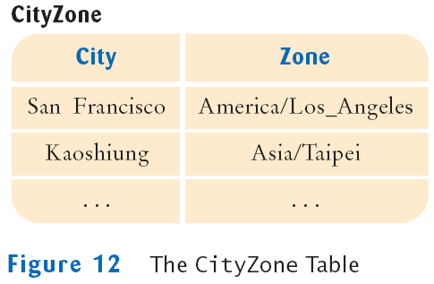
A Three-Tier Application
- To query the database, the bean needs a Connection object
- With Tomcat, specify the database configuration in conf/server.xml
A Three-Tier Application
<DefaultContext>
<Resource name="jdbc/mydb" auth="Container" type="javax.sql.DataSource"/>
<ResourceParams name="jdbc/mydb">
<parameter>
<name>factory</name>
<value>org.apache.commons.dbcp.BasicDataSourceFactory</value>
</parameter>
<parameter>
<name>driverClassName</name>
<value>driver class</value>
</parameter>
<parameter>
<name>url</name>
<value>database URL</value>
</parameter>
<parameter>
<name>username</name>
<value>database user name</value>
</parameter>
<parameter>
<name>password</name>
<value>database user password</value>
</parameter>
</ResourceParams>
</DefaultContext>
A Three-Tier Application
A Three-Tier Application
- Enhanced TimeZoneBean so that it manages a list of cities
- Can add cities to the list and remove a selected city
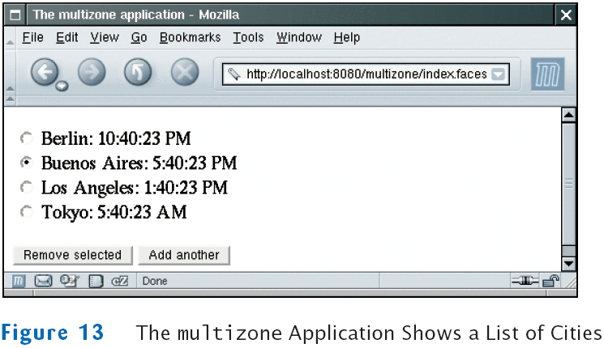
The Directory Structure of the multizone Application
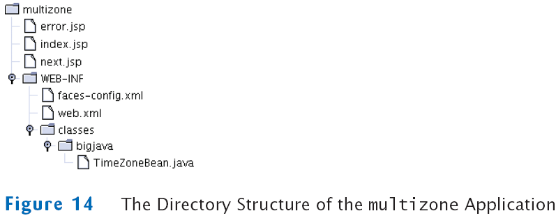
File multizone/index.jsp
File multizone/next.jsp
File multizone/error.jsp
File multizone/WEB-INF/classes/bigjava/TimeZoneBean.java
File multizone/WEB-INF/faces-config.xml
Self Check
- Why don't we just keep a database connection as an instance field in the TimeZoneBean?
- Why does the removeCity method of the TimeZoneBean return null or "back", depending on the size of the cities field?
Answers
- Then the database connection would be kept open for the entire session.
- As long as there are cities, the next.jsp page is redisplayed. If all cities are
removed, it is pointless to display the next.jsp page, so the application navigates
to the index.jsp page.
previous |
start